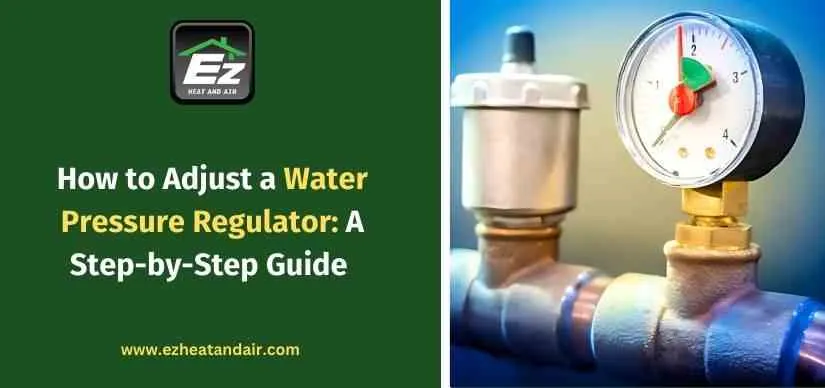

How to Adjust a Water Pressure Regulator: A Step-by-Step Guide

FAQs
Q1. How often should I check my water pressure regulator?
One should take care of the water pressure regulator at least once a year, and it's better to take more frequent inspections in case of noticeable fluctuating pressure. Routine checks make leak detection easier, allowing for even water flow.
Q2. What should a house's water pressure be?
A safe water pressure inside a household should remain in the range of 40-60 PSI. While values through the 80 PSI mark cause damage, pressures below 30 PSI might lead to weak flow.
Q3. Can I adjust my water pressure regulator without a gauge?
It's not recommended. Pressure gauges ensure that you set it accurately and prevent the consequences of over-tightness or under-setup on the regulator.
Q4. How do I tell if my regulator has gone bad?
Pressure fluctuation, water hammer, frequent leakage, and discomfort due to fluctuating hot-water temperatures are indicators that your regulator has gone bad. Replacement would be prudent in any one of these occurrences.
Q5. Not all homes have water pressure regulators?
There are houses without a water pressure regulator. Ordinary homes hooked directly to municipal water may have fluctuating pressure. If there's no regulator installed in your house, it can protect your plumbing system.